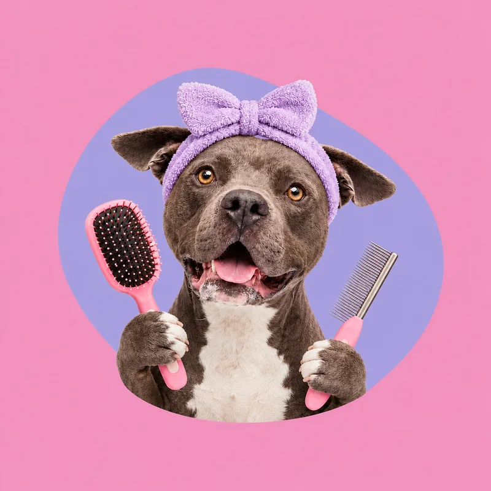
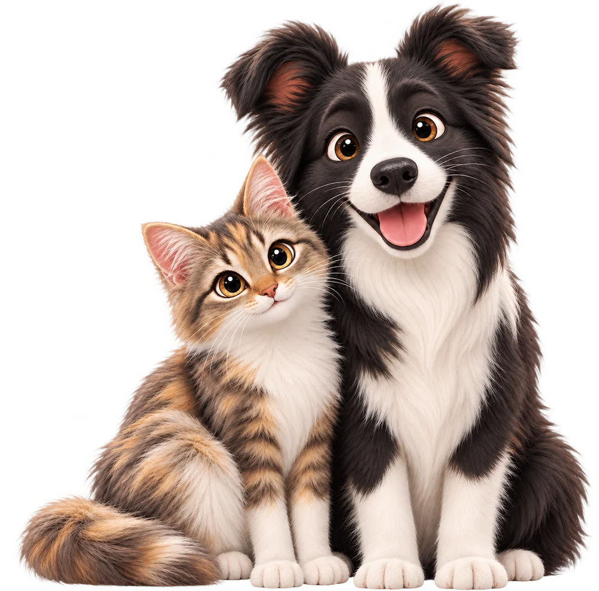
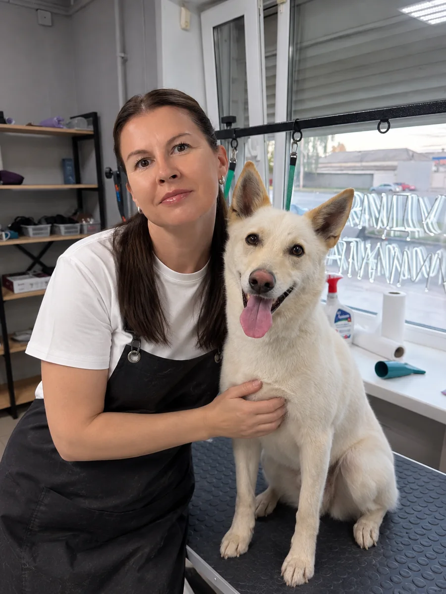
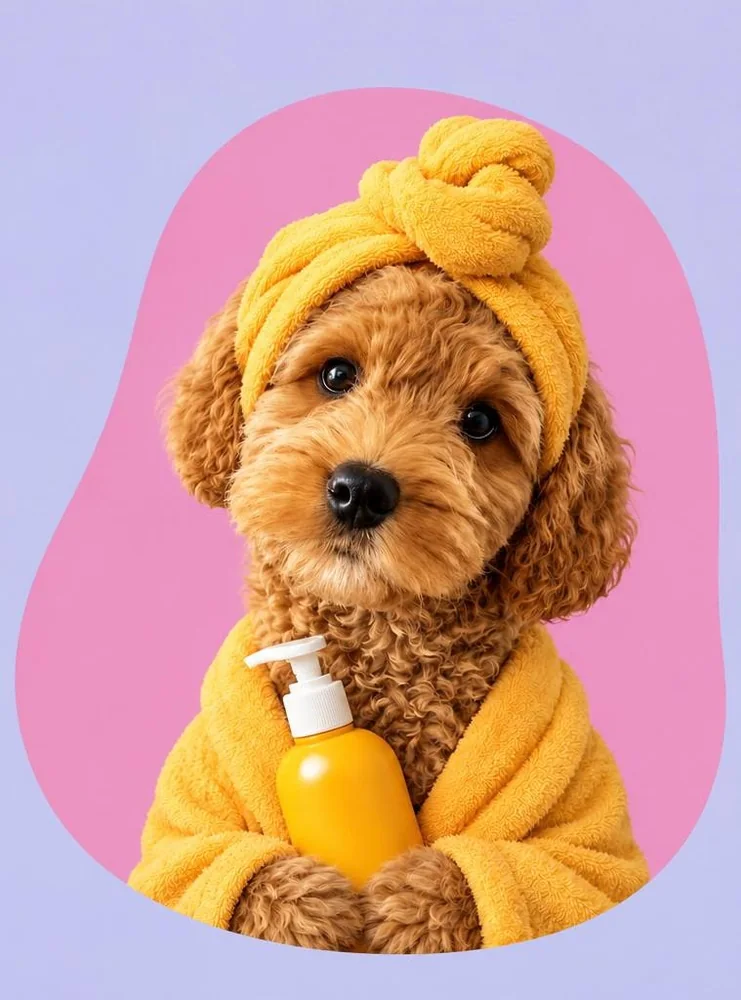
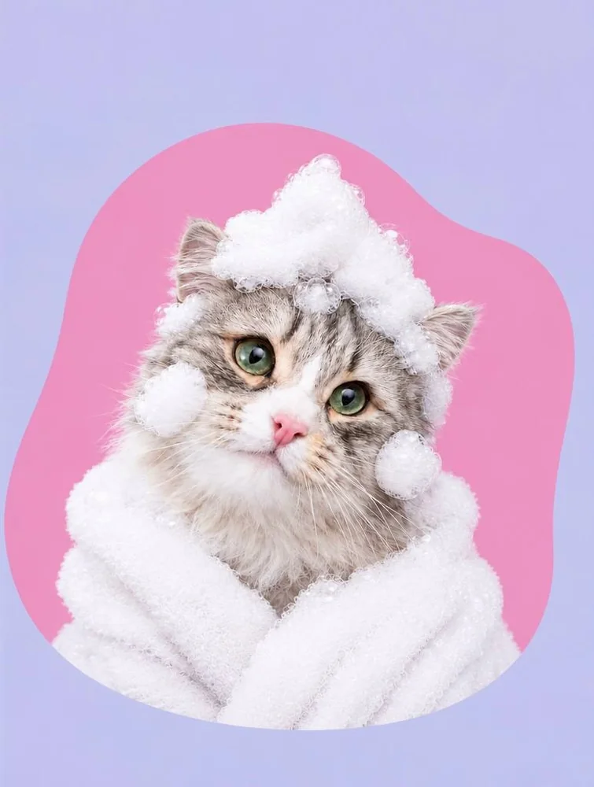
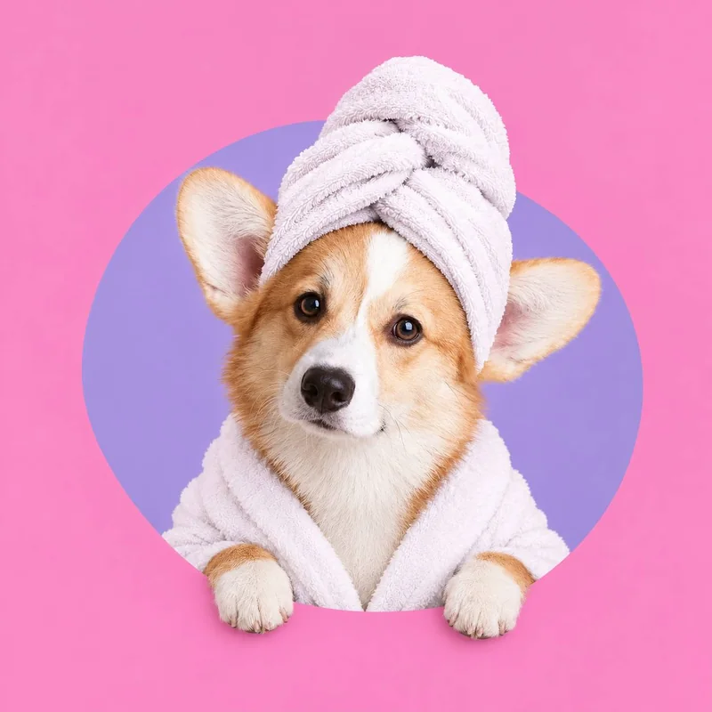

ГРУМИНГ-САЛОН ДЛЯ ЛЮБИМЫХ ПИТОМЦЕВ
После нас хвост
не перестаёт вилять
Бережный уход, стильные стрижки
и счастливые питомцы.


Нам доверяют
самое дорогое
Для нас груминг — это не просто уход за шерстью, а внимание к характеру, настроению и комфорту каждого хвостика.
Мы работаем бережно, без лишней спешки и с уважением к индивидуальным особенностям питомца. Нам важно, чтобы во время процедур ваш любимец чувствовал себя спокойно, а вы были уверены, что он в заботливых руках.
Наши услуги
Всё, чтобы ваш любимец был чистым, ухоженным и довольным

Расчёсывание и удаление шерсти
Аккуратно вычешем колтуны и подшёрсток — питомцу легче, а дома чище.
от 2 500 ₽
Записаться
Оформление шерсти и когтей
Аккуратная форма шерсти и подстриженные когти для комфортных прогулок.
от 1 500 ₽
Записаться
SPA-уход
Расслабляющее купание и уход за шерстью — для мягкости и красивого блеска.
от 3 000 ₽
ЗаписатьсяИтоговая стоимость зависит от породы, размера питомца и состояния шерсти. Напишите нам — подскажем точнее.
МАЛЕНЬКОЕ ПРЕОБРАЖЕНИЕ — БОЛЬШАЯ РАДОСТЬ
До и после —
До и после —
смотрите, какие хвостики!
Немного заботы, профессиональный уход — и новые поводы собой гордиться.
НАПИШИТЕ НАМ
Выберите удобный способ связи
Расскажите, какой уход нужен вашему любимцу — поможем подобрать услугу и ответим на вопросы.